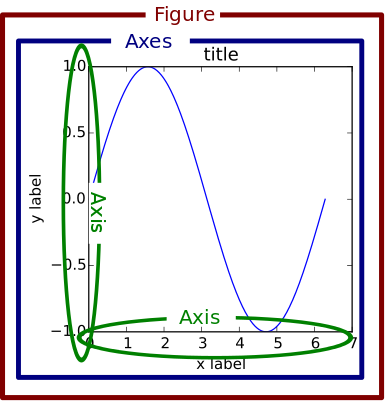

matplotlib用法笔记
matplotlib 是Python编程语言及其数值数学扩展包 NumPy的可视化操作界面。它为利用通用的图形用户界面工具包，如Tkinter, wxPython, Qt或GTK+向应用程序嵌入式绘图提供了应用程序接口（API）。此外，matplotlib还有一个基于图像处理库（如开放图形库OpenGL）的pylab接口，其设计与MATLAB非常类似–尽管并不怎么好用。SciPy就是用matplotlib进行图形绘制。
绘图结构
matplotlib API包含有三层：
- backend_bases.FigureCanvas : 图表的绘制领域
- backend_bases.Renderer : 知道如何在FigureCanvas上如何绘图
- artist.Artist : 知道如何使用Renderer在FigureCanvas上绘图
FigureCanvas和Renderer需要处理底层的绘图操作，例如使用wxPython在界面上绘图，或者使用PostScript绘制PDF。Artist则处理所有的高层结构，例如处理图表、文字和曲线等的绘制和布局。通常我们只和Artist打交道，而不需要关心底层的绘制细节。
Artists分为简单类型和容器类型两种。简单类型的Artists为标准的绘图元件，例如Line2D、 Rectangle、 Text、AxesImage 等等。而容器类型则可以包含许多简单类型的Artists，使它们组织成一个整体，例如Axis、 Axes、Figure等。

基本用法
使用plt.figure定义一个图像窗口。
1 | import matplotlib.pyplot as plt |
设置标题
1 | # 导入matplotlib库 |
设置坐标轴
使用plt.xlim设置x坐标轴范围：(-1, 2)； 使用plt.ylim设置y坐标轴范围：(-2, 3)；
使用plt.xlabel设置x坐标轴名称：’I am x’； 使用plt.ylabel设置y坐标轴名称：’I am y’；
1 | plt.xlim((-1, 2)) |
使用np.linspace定义范围以及个数：范围是(-1,2);个数是5. 使用print打印出新定义的范围. 使用plt.xticks设置x轴刻度：范围是(-1,2);个数是5.
1 | new_ticks = np.linspace(-1, 2, 5) |
使用plt.yticks设置y轴刻度以及名称：刻度为[-2, -1.8, -1, 1.22, 3]；对应刻度的名称为[‘really bad’,’bad’,’normal’,’good’, ‘really good’]. 使用plt.show显示图像.
1 | plt.yticks([-2, -1.8, -1, 1.22, 3],[r'$really\ bad$', r'$bad$', r'$normal$', r'$good$', r'$really\ good$']) |
使用plt.gca获取当前坐标轴信息. 使用.spines设置边框：右侧边框；使用.set_color设置边框颜色：默认白色； 使用.spines设置边框：上边框；使用.set_color设置边框颜色：默认白色；
1 | ax = plt.gca() |
调整坐标轴
使用.xaxis.set_ticks_position设置x坐标刻度数字或名称的位置：bottom.（所有位置：top，bottom，both，default，none）
1 | ax.xaxis.set_ticks_position('bottom') |
使用.spines设置边框：x轴；使用.set_position设置边框位置：y=0的位置；（位置所有属性：outward，axes，data）
使用.yaxis.set_ticks_position设置y坐标刻度数字或名称的位置：left.（所有位置：left，right，both，default，none）
使用.spines设置边框：y轴；使用.set_position设置边框位置：x=0的位置；（位置所有属性：outward，axes，data） 使用plt.show显示图像.
1 | ax.spines['bottom'].set_position(('data', 0)) |
legend图例
基本用法
1 | import matplotlib.pyplot as plt |
调整位置和名称
1 | plt.legend(handles=[l1, l2], labels=['up', 'down'], loc='best') |
其中’loc’参数有多种，’best’表示自动分配最佳位置。
1 | 'best' : 0, |
子图
使用plt.subplot来创建小图。 plt.subplot(2,2,1)表示将整个图像窗口分为2行2列, 当前位置为1。 使用plt.plot([0,1],[0,1])在第1个位置创建一个小图。
1 | import matplotlib.pyplot as plt |
plt.subplot(222)表示将整个图像窗口分为2行2列, 当前位置为2. 使用plt.plot([0,1],[0,2])在第2个位置创建一个小图.
1 | plt.subplot(222) |
动画
Matplotlib使用FuncAnimation函数生成动画。参数说明：
- fig 进行动画绘制的figure
- func 自定义动画函数，即传入刚定义的函数animate
- frames 动画长度，一次循环包含的帧数
- init_func 自定义开始帧，即传入刚定义的函数init
- interval 更新频率，以ms计
- blit 选择更新所有点，还是仅更新产生变化的点。应选择True，但mac用户请选择False，否则无法显示动画
1 | from matplotlib import pyplot as plt |
参考链接
- matplotlib, by wikipedia
- 莫烦Python, by morvanzhou
- API Overview,by matplotlib.
- Python matplotlib高级绘图详解,by 微岩.
- 用Matplotlib制作动画,by 段丞博.
- Plot inline or a separate window using Matplotlib in Spyder IDE,by stackoverflow.
- Python之matplotlib的使用汇总,by 探索数据之美.